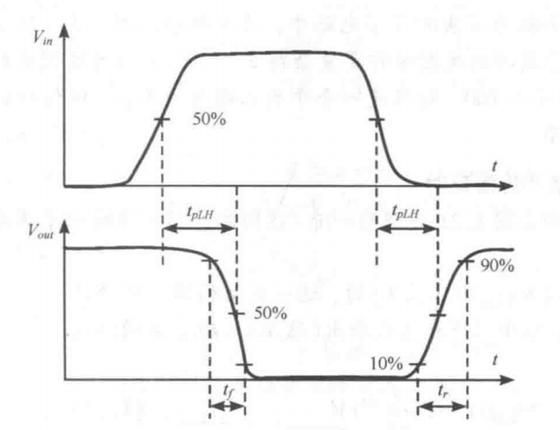

一.电压传输特性($f-VTC$)
(1)开关阈值电压：$V_{m}=f(V_m)$
(2)过渡宽度$TW$：
噪声容限：
（1）低电平：$NM_{L}=V_{IL}-V_{OL}$
（2）高电平：$NM_{H}=V_{OH}-V_{IH}$
★二.再生性
（1）定义：不确定信号经过$N$个门后变成有效信号。
（2）★再生条件：过渡区$A_{v}(斜率)>1$，合法区域$A_{v}(斜率)<1$
（3）判断方法：反函数蛛网法
三.抗噪能力与噪声的类型
1.噪声的类型
(1)正比噪声($V_{SW}$为信号摆幅)
与信号的摆幅成正比的噪声$gV_{SW}$
(2)白噪声
白噪声$fV_{Nf}$
2.噪声容限
$V_{SW}≥\frac{2\Sigma f_{i}V_{Nf}}{1-2\Sigma g_{j}}$
当$g$很大的时候，应该减少$g$，此时增大$V_{SW}$作用不大.
四.传播时间与上升下降时间

①上升/下降时间：$t_{r}、t_{f}$
②传输时间：$t_{p}=\frac{1}{2}(t_{PHL}+t_{PLH})$
★③传输时间测量方法:环振
(1)环振条件：①奇数个反相器②$2N_{tp}>>t_{r}+t_{f}$
(2)环振周期：$T=2t_{p}N$
注：环振测试出来的传输时间十分理想，因为在该测试条件下，寄生负载较小，因为扇入扇出均为$1$
★五.$RC$网络
（1）传播延时：
①$t_{50\%}=\tau ln2=0.69\tau$
②$t_{10\%→90\%}=\tau ln9=2.2\tau$
（2）网络功耗：
从$0→V$时，有$\frac{1}{2}CV^2$的热量发生在电阻上，从$V→0$时，也有$\frac{1}{2}CV^2$的热量发生在电阻上.